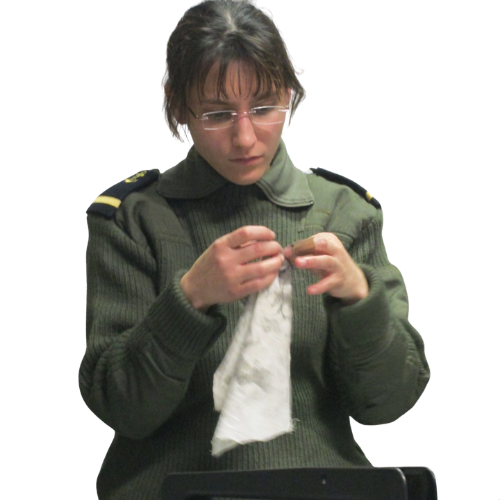

Volontaire
Ancien Lieutenant de vaisseau (capitaine) de réserve dans la Marine Nationale, spécialiste en Techniques d'Optimisation du Potentiel (TOP), aujourd'hui renommé ORFA (Optimisation des Ressources des Forces Armées), j'ai passé 15 années à apprendre que la vraie performance se joue dans la connaissance de son mental, de ses émotions et de son corps.
Après une Classe Préparatoire aux Grandes Ecoles, j'intègre en même temps l'EMLYON Business School et l'Ecole Militaire de Paris comme réserviste. A 20 ans, je m'engage comme Volontaire Officier Aspirant dans l'aéronavale.
En formation initiale officier, un sac de 10 kilos sur les épaules, à 3h du matin, ma voix intérieure me hurle : "Laisse tomber !"
Cette nuit-là, en Bretagne, j'ai compris deux choses :
1-La force ne vient pas de ce qu'on endure mais de ce que l'on comprend.
2-Les outils les plus puissants sont déjà en nous. L'important est d'apprendre à les activer.
De là est née ma passion : transmettre ces outils de préparation mentale à ceux qui, comme moi, doivent prendre des décisions critiques sous pression, sans se laisser submerger.
Engagée
Je poursuis mon parcours en Master Recherches co-dirigé à l'Ecole Polytechnique, Mines ParisTech, ESCP Business School et Paris X. Je valide tout ce que j'ai appris sur le terrain par la science. Je débute ma carrière comme chasseur de têtes, tout en poursuivant mon engagement dans la réserve opérationnelle.
J'accompagne de la sélection jusqu'à la fin de la période d'essai les dirigeants et top managers que je recrute. Mon accompagnement dépasse mes compétences en recrutement : je les aide aussi à gérer leur charge mentale, réguler leurs émotions, atténuer le stress, gérer leur fatigue et retrouver de l'énergie. Mes premiers clients, ce sont eux. C'est ainsi qu'en 2019, je créer mon entreprise pour accompagner en préparation mentale les dirigeants, managers, sportifs de haut niveau, soignants, étudiants et même les enfants.
A ce jour, j'ai accompagné plus de 3 200 personnes. Étant la première en France à avoir adapté les protocoles de préparation mentale aux enfants dès 3 ans et aux adolescents, j'ai à cœur de transmettre et partager mon savoir. Je créer le Programme Devenir Préparateur Mental où je forme plus de 50 personnes en reconversion professionnelle. Je leur enseigne la préparation mentale, l'intelligence émotionnelle, les neurosciences, les biais cognitifs, la psychologie sociale et de la performance. Je les accompagne également dans un module dédié pour vendre et vivre de leur activité sereinement.
Formation
Master Recherches
Ecole Polytechnique, Mines ParisTech, ESCP Business School, Paris X
Mention Très bien, Major de promotion
EMLYON Business School
Programme Grande Ecole
University of Strathclyde, Royaume-Uni
MSc In International Management
Institut des Hautes Etudes de la Défense Nationale
Grandes Ecoles
Autres certifications
Cognitive Psychology and Neuropsychology
University of Cambridge
Préparateur Mental Niveau 3
Spécialiste Techniques d'Optimisation du Potentiel (TOP)
Optimisation des Ressources des Forces Armées (ORFA)
Compétences émotionnelles
Université Catholique de Louvain
Premiers secours psychologiques 6C
Évitement du Syndrome de Stress Post-Traumatique
Test Psychométrique QE Pro
EMLYON Business School